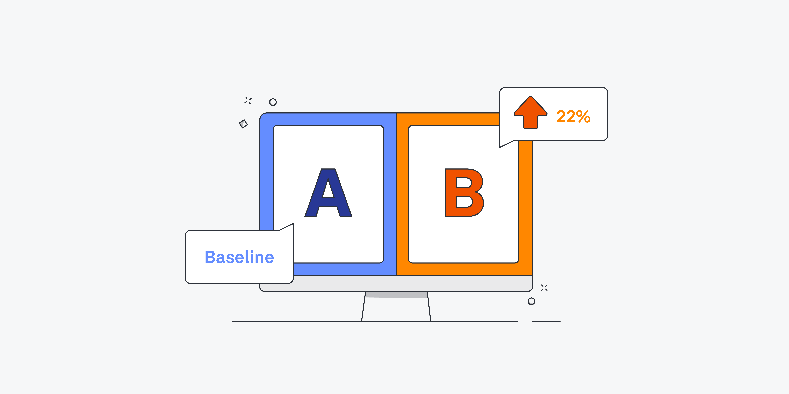
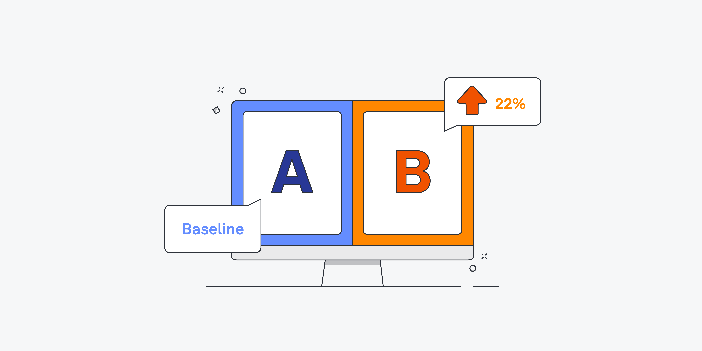
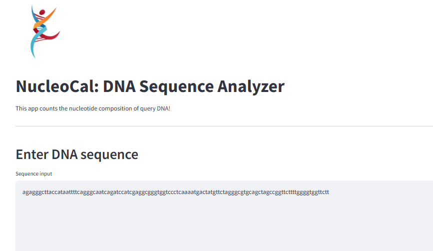

This a machine learning-based predictive system for detecting Parkinson's disease using vocal biomarkers. The model is trained on
the Oxford Parkinson's Disease Detection Dataset, leveraging Support Vector Classifier (SVC) to classify
individuals as healthy or affected by Parkinson's disease.
 

This project analyzes the impact of a CTA button change on a website's Click-Through Rate (CTR) using A/B testing and hypothesis testing. By computing pooled probability, standard error, and conducting a Z-test, we determine whether the change led to a statistically significant increase in engagement. The analysis includes p-value interpretation, confidence interval calculation, and visualizations to support the findings. This project showcases how data-driven decisions can optimize website performance. 🚀

This SQL-based project focuses on cleaning and exploratory data analysis (EDA) of worldwide employee layoffs (March 2020 - March 2023). By handling inconsistencies, missing values, and duplicates, the dataset was transformed into a structured format for insightful analysis. The EDA uncovers key trends, including top companies, industries, and countries affected by layoffs, as well as funding insights and yearly trends. This project showcases SQL skills in data transformation and business intelligence. 🚀

This project utilizes unsupervised learning to perform user profiling and segmentation for targeted advertising. By analyzing 16 diverse user attributes—including demographics, online behavior and ad interactions, K-means clustering was implemented to group users into meaningful segments. The project enhances marketing strategies by enabling personalized ad targeting, optimizing ad delivery, and improving campaign performance. Interactive visualizations provide insights into user behavior, making this a practical application of machine learning in digital marketing. 🚀

This Tableau dashboard presents a review analysis of British Airways from 2016 to 2023, showcasing key metrics such as overall rating (4.2), cabin staff service (3.3), and entertainment (1.4, the lowest-rated category). It highlights rating trends over time, a geographical breakdown of reviews, and aircraft-specific performance, where Boeing 747-400 (4.7) leads and A321 (3.6) lags. The Boeing 777-200 received the highest number of reviews (329). Interactive filters allow users to explore ratings by seat type, traveler category, aircraft, and region, making the analysis dynamic and insightful.

This Power BI dashboard provides a dynamic analysis of Plant Co.'s quantity performance for 2023, comparing Year-to-Date (YTD) vs Prior Year-to-Date (PYTD) across countries, months, and product types. The total YTD quantity is 555.66K, with a growth of 17.05K over PYTD, and a Gross Profit Percentage (GP%) of 39.62%. Key visualizations include a tree map of country-wise performance, a waterfall chart displaying monthly quantity changes, a bar and line chart tracking product type trends, and a scatter plot analyzing value YTD vs GP% by account. This interactive dashboard enables detailed insights into sales trends, growth areas, and profitability.

NucleoCal: DNA Sequence Analyzer is a web-based application built with Streamlit that quickly analyzes DNA sequences by counting the occurrence of each nucleotide (A, T, G, C). Designed for simplicity and efficiency, it helps researchers, students, and bioinformatics enthusiasts gain insights into DNA composition with just a few clicks. 🚀